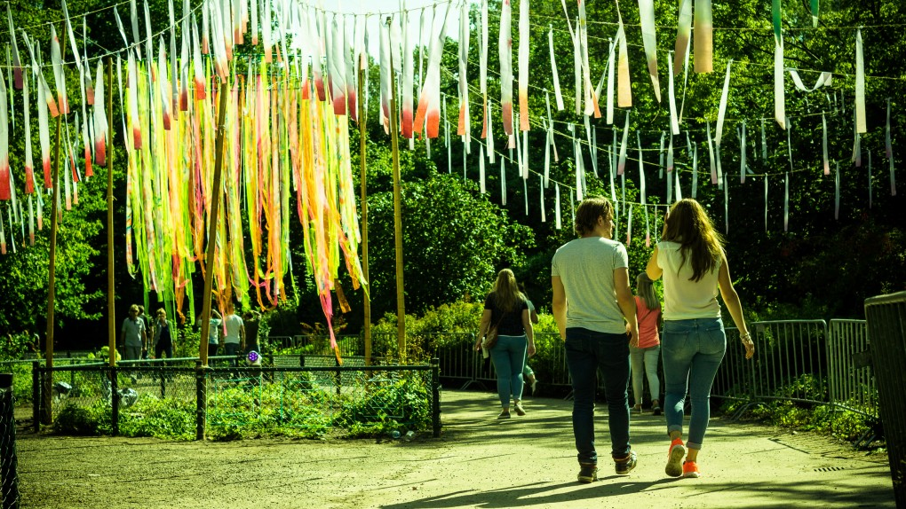
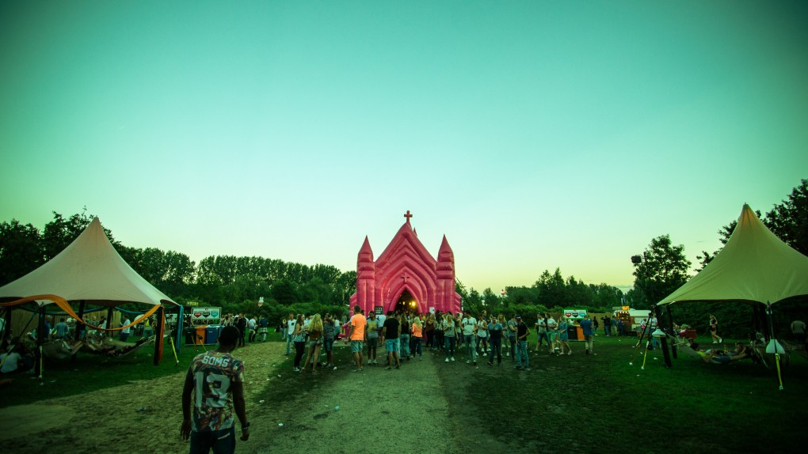
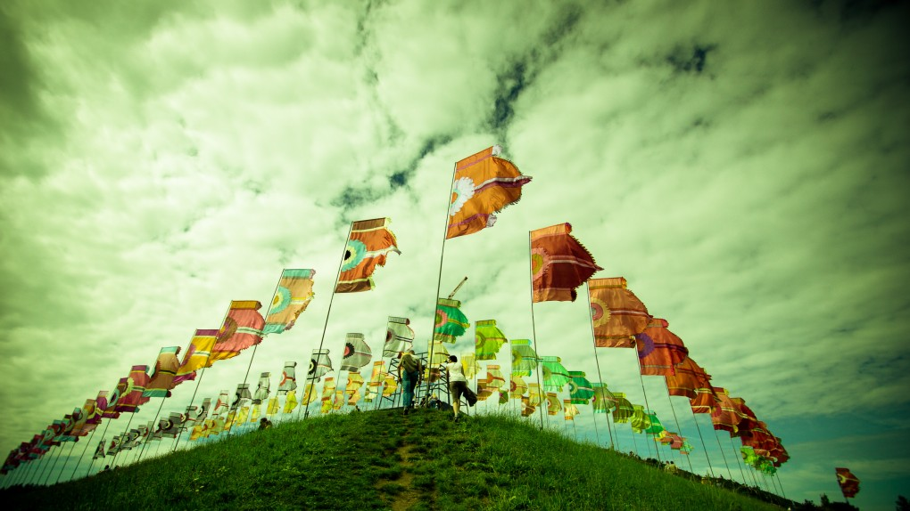
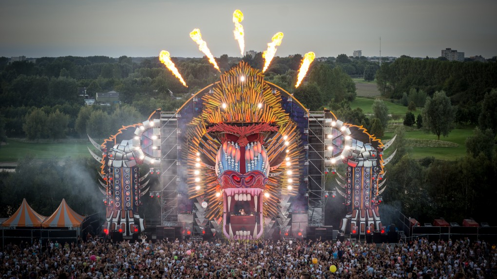
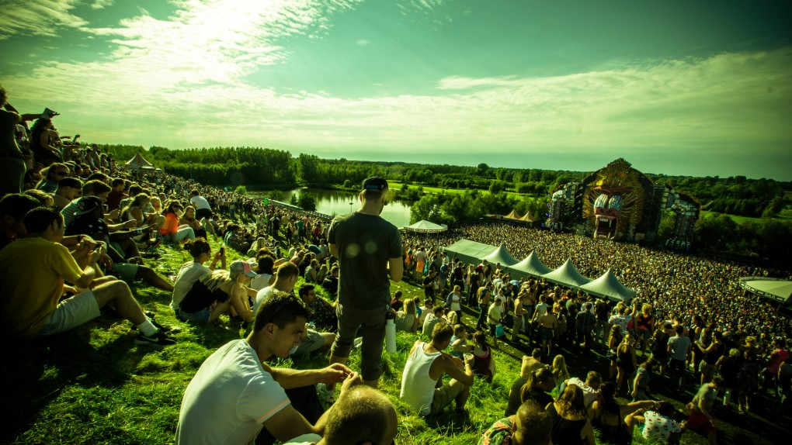

Review: Mysteryland 2015
{kind=link}

The blockbuster summer festival has come to represent the decadent side of dance culture. North American EDM has been franchised out to the world via travelling brands such as Ultra and EDC, while the incredible success of Belgium’s Tomorrowland has transformed it into a tourist tick-box akin to a vacation in Majorca. From a distance, Mysteryland might seem to have a lot in common, but in reality it’s an event with a stronger authenticity at its core.
Start with the fact that Mysteryland been around for so long. The event held its 22nd party this year, and while it was the first time as a two-day camping weekender, there’s a such sense of history that you’ll meet veterans who’ve been to nearly every party since the early 90s. It was the early flagship of ID&T, and the inspiration for its Belgian sibling Tomorrowland, and while the latter evolved into a goliath global event, Mysteryland held onto its Dutch roots.
And this goes beyond the iron grip the Dutch have on the mainstage, of which the design was characteristically grand, featuring a pair of Trojan Horses locking eyes over the central DJ booth. The line up consists of a rolling cast of EDM A-leaguers on Saturday that included Oliver Heldens, Laidback Luke and Nicky Romero, with Sweden’s Alesso the only one to break the loop when he closed the first day of the festival.
{kind=link}

The spectacularly decked out Q-dance stage, designed like a colourful monkey’s face that grew infinitely in stature and impact as the sun went down, was lit up with red and blue lights as smoke billowed out its nose and flames shot overhead. Hardstyle is the eternal whipping boy of dance culture, though it’s incredibly popular in the Netherlands, evidenced by the thousands upon thousands ensuring it was the most packed among the festival’s 15+ stages for the entire weekend. Its artist roster almost exclusively Dutch.
{kind=link}

It’s often said though that while the Netherlands exports its commercial dance acts to the world, it’s the more underground styles that really thrive within the country’s borders. And Mysteryland is a party that draws much more widely from the spectrum of Dutch artists, something you discover quickly when you explore the wide stretches of land between the two biggest stages that dominate the northern and southern ends of the festival, or even venture past the bigger house and techno stages curated by the likes of HYTE and Dutch stalwart Joris Voorn. There’s a tiny little stage to be found around every corner, and it’s usually curated by one of local crews.
Amsterdam’s LBGT Milkshake Festival curated a sprawling area in the north, its stage resembling an oversized pink children’s toy house. Venture south on the other hand, and you stumble across a stage constructed of several shipping containers that boasted a ‘Vinyl Only’ selection of DJs curated by Amsterdam club Studio 80, or the tiny yet impressive stage curated by the Kojade performance art collective, with a cast of elaborately costumed dancers and live percussionists complimenting its deeper house sounds.
{kind=link}

But these represent just the tip of the iceberg of what you’ll find when you go exploring Mysteryland, musically or otherwise. What really makes the party special is its otherworld vibe, which comes from the wealth of little details rather than the scale of the spectacle. The grassy fields and rolling hills of the Voormalig Floriade that’s hosted the party for the past decade are crucial to this, lending itself to a genuine ‘exploration’ vibe as you traverse grassy fields, cross rivers and climb towering slopes to get from stage to stage.
And literally every last inch is peppered with colorful detail, something that captures your eye wherever you look. The north of the grounds is dominated by a man-made pyramid formation that overlooks the Q-dance stage, dotted with flags in circular formations that bear the crests of an imaginary nation.
{kind=link}

Structures built from tall wooden slats pepper the landscape; walls, fences, towering entrances to another arena. Around every corner there’s something wonderful and strange to greet you – decorations in the trees, costumed performers, a giant teddy bear you can plonk yourself under for a rest. In the north you’ll look out towards a lake that’s peppered with floating colored spheres that light up vividly after sunset, while when you venture south you’ll cross a smaller lake dotted with giant lillypads via a zig-zagging platform. It’s a weekend full of serene moments.
To a degree, this year’s Mysteryland was noticeably lighter on these details. The 20th birthday edition in 2013 extended out to cover the entire stretch of the Voormalig Floriade, for a sprawling party that boasted a mind-boggling amount of detail, more than you could ever absorb in a single day. An infinite array of quirky stages, little alcoves you could duck into to play video games or peruse a bookshelf. Artful details that go well beyond your typical festival experience.
{kind=link}
“Every year, we often see that the smallest details are being perceived as the highlights, instead of the performances from DJs like David Guetta or Tiësto or anyone like that,” ID&T cofounder Irfan van Ewijk told inthemix in 2013. “That’s what surprises people, and creates the intense storytelling of this experience. An emphasis on the culture is where we put most of our energy, and we take a lot of pride in that.”
Both Ewijk and fellow ID&T founder Duncan Stutterheim have departed the company since, in the wake of its sale to SFX, and with both championing the more cerebral side of the festival over the years, you wonder what the fate of Mysteryland will be. For the moment though the festival has maintained its status as one of the most unique events you’ll find anywhere; a charming mishmash of blockbuster culture and cerebral art installation, where Amsterdam’s local party crews mingle with Jeff Mills and Martin Garrix.
Mysteryland justifies putting aside any snobbery you might have about attending one of these huge commercial events, even if it’s just for one weekend.